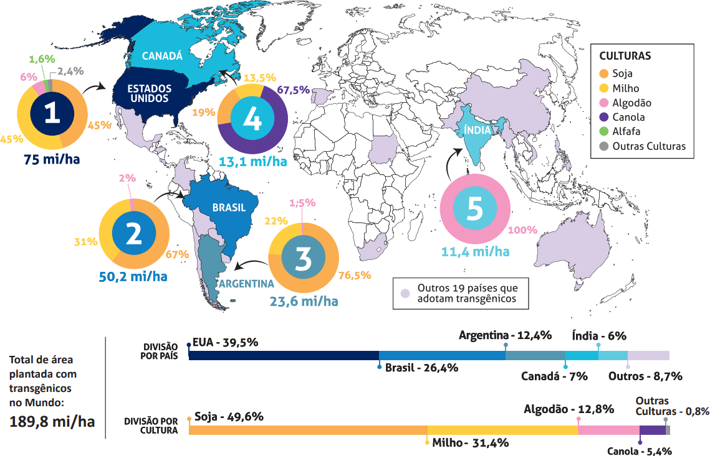

OS CINCO PAÍSES COM MAIOR ÁREA PLANTADA COM TRANSGÊNICOS NO MUNDO
(em milhões de hectares - mi/ha)

Disponível em: https://cib.org.br/wp-content/uploads/2018/06/2018.06.26.Top5_Portugues.pdf. Acesso em: 18 Jul. 2018 (adaptado).
Considerando o infográfico apresentado, avalie as afirmações a seguir.
-
A distribuição da área plantada com transgênicos no mundo reflete o nível de desenvolvimento
econômico dos países.
-
Os Estados Unidos da América possuem a maior área plantada de algodão transgênico no mundo.
-
O hemisfério norte concentra a maior área de produção transgênica.
-
A área de produção de soja transgênica é maior no Brasil que na Argentina.
É correto apenas o que se afirma em
-
I e II.
-
I e IV.
-
III e IV.
-
I, II e III.
-
II, III e IV